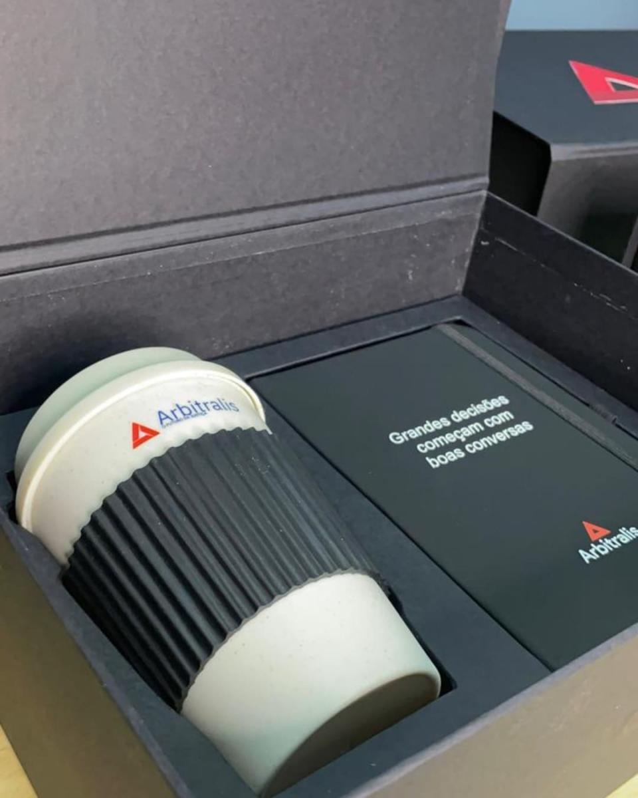
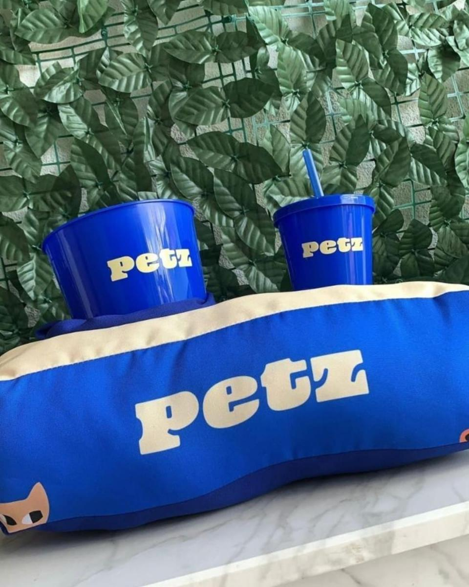
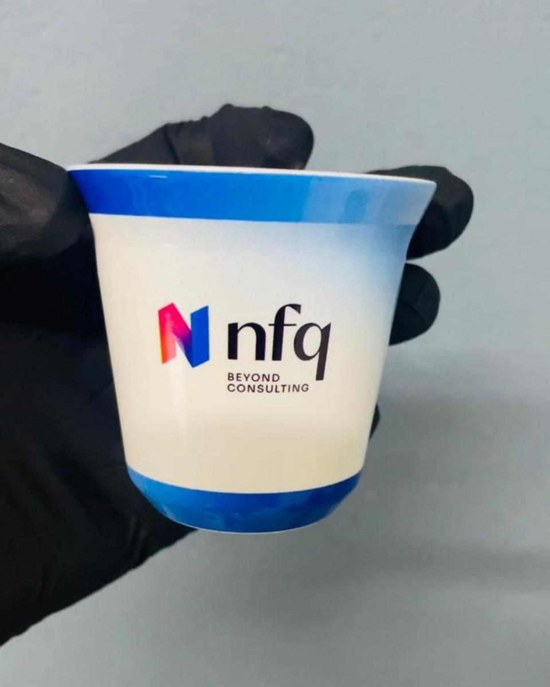
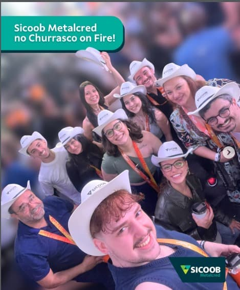

MJC Personalizados · criado para marcas
sua marca merece ser lembrada.
A gente transforma a ocasião em um produto que fica. Campanha, evento ou equipe: a sugestão certa, o mockup antes de produzir e a entrega em todo o Brasil.
- Todo o Brasilentrega nacional, do briefing ao recebimento
- Mockup antesvocê vê e aprova antes da produção
- Prazo alinhadoprodução no ritmo do seu cronograma
- Sugestão certao produto parte da ocasião, não do catálogo
o jeito MJC de ver as coisas
aparecer não é ser lembrado.
As marcas nunca tiveram tantas maneiras de aparecer. Um anúncio passa. Um post desaparece. Uma campanha termina. Uma experiência bem construída continua na mesa, na próxima viagem, na rotina de alguém.
-
01
a ideia.
Antes do produto: a ocasião, quem recebe e o que a marca quer provocar.
-
02
a escolha.
Nem o mais caro, nem o mais popular. O certo é o que faz sentido para quem recebe.
-
03
a identidade.
Cor, textura, material, acabamento. Personalizar é dar forma à personalidade da marca.
-
04
a conexão.
As pessoas lembram de ter sido lembradas. Aí a entrega vira relacionamento.
-
05
o cuidado.
Arte, gravação, acabamento, apresentação e prazo. Sem execução, a ideia perde força.
-
06
o que fica.
Continua quando alguém usa, compartilha ou pergunta de onde veio.
na prática
ideias que ganham forma.




Também em Bradesco, Nissan, Exclusive Gold e Suco Way. Fotos de projetos publicados pela MJC.
quem recebe, lembra
o que fica depois da entrega.
Depoimentos ilustrativos para esta prévia, com fotos de apoio. Antes de publicar, entram as falas e os retratos reais dos clientes.
para quem criamos
escolha o contexto.
Você não precisa chegar com o produto definido. Conta a ocasião. A gente devolve um caminho.
campanhas
Lançamentos, presença de marca e ações em que o objeto continua depois do post.
pedir sugestãoRH e cultura
Boas-vindas, reconhecimento e datas que aproximam as pessoas da casa.
pedir sugestãoeventos
Feiras, ativações e experiências em que a ideia precisa caber na mão.
pedir sugestãoseu próximo projeto começa aqui
tem uma ideia aí?
Pode ser uma ação para 100 pessoas ou um projeto para milhares. Conta a ocasião, para quem é e quando precisa acontecer. O resto a gente constrói junto.
conversar sobre meu projetoAtendimento pelo WhatsApp (11) 91149-5825 · São Paulo
Vocês atendem empresas de todo o Brasil?
Sim. A produção e a logística entram no desenho de cada pedido, para qualquer estado.
Preciso saber exatamente qual produto quero?
Não. Ocasião, público, prazo e uma faixa de investimento já bastam para a gente sugerir um caminho.
Existe quantidade mínima?
Varia conforme o produto e a técnica. A equipe avalia a viabilidade no orçamento.
Vocês fazem kits, eventos e ações internas?
Sim. Campanhas, feiras, onboarding, reconhecimento e kits corporativos.
Como recebo um orçamento?
No WhatsApp: quantidade estimada, data, a ideia ou o produto, e o local de entrega. O mockup entra antes da produção.